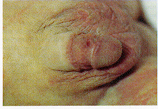
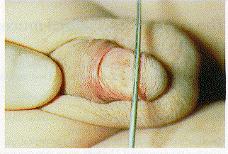
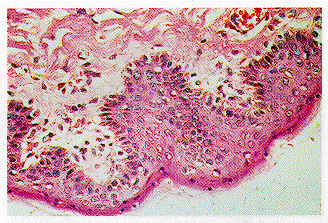
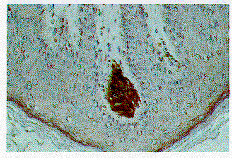

THE CIRCUMCISION REFERENCE LIBRARY
Department of Pathology, Health Sciences Centre, University of Manitoba, Winnipeg, Manitoba, Canada
The prepuce is usually dismissed as skin [1],[2] or, less often, it is seen as a simple fold of skin and mucosa [3]. At best, the prepuce is thought to protect the glans penis; at worst it is a health hazard that may be avoided by circumcision [4], [5], [6]. Not surprisingly, articles and editorials on the advantages and disadvantages of circumcision consistently fail to discuss the prepuce as a tissue worthy of preservation in its own right.
`Circumcision removes only a few millimeters of skin' is, in our experience, common and comforting counsel but has been neither proved nor disproved for North America or other countries where circumcision remains largely a cosmetic procedure.
The prepuces of 22 adults (mean age 37 years, range 22-58) were studied grossly and histologically at autopsy. Ten prepuces extended to or beyond the tip of the glans and 12 prepuces failed to reach the tip of the glans. The material was unselected except for the age of the subjects (20-60 years) and for preputial length (`long' and `short'). The outer surface of the prepuce was measured from its tip to the sulcus of the glans; the skin of the penile shaft extended from the sulcus to the abdominal wall. The inner surface of the prepuce (`mucosa') was measured with the prepuce retracted but not stretched. The expected preputial tissue loss to circumcision (preputial skin plus mucosa) was reduced by 3 cm to allow for a residual mucosal cuff (the estimated cuff at autopsy was 2-4 cm). Ellipses of mucosa and submucosa (15 x 5 mm) were excised from four sites; the mucocutaneous junction, to include a cross-section of the `ridged band' (see below); the `smooth mucosa'; the corona of the glans penis; and the frenu lum of the prepuce.
Mucosae were fixed in buffered 5% formol-saline, divided lengthwise into two blocks and embedded in paraffin wax. Subserial sections, 3-5 from each block, were stained with haematoxylin and eosin (HE). Meissner's corpuscles of the genitalia resemble those of finger-print skin and are identified in H&E-stained sections as compact, pear-shaped or elongated, lamellated and encapsulated end-organs attached to the basal lamina of the mucous membrane, or located high in the mucosal papillae of preputial mucosa [7], [8]. Similar and additional end-organs of `ridged' and `smooth' mucosae were stained using the avidin-biotin-complex peroxidase technique using an antibody (Biomeda Corp, Foster City, CA, USA) against S100 protein [9] present in neurites and Schwann cells. Sections from each mucosal area were assessed semi-quantitatively for neural end-organs. Superficial blood vessels of the `ridged band' were filled with a silicone rubber mass placed in the superficial external pudendal artery, followed by dehydration and clearing of the mucosa samples through graded alcohol and methyl salicylate.
Unknown amounts of true skin were missing from the shaft of the circumcised adult penis. Therefore, four circumcised babies, 1-3 years of age, who had died for reasons unrelated to circumcision, were also reviewed. In each case, the cut edge of the skin of the penile shaft stopped 1-2 cm short of the glanular sulcus, an estimated shortfall in shaft skin of 20-25%. The mucosa between the cut-skin edge and corona of glans was stretched and flattened and contrasted sharply with the lax mucosa normally seen at this location (Fig. 1, Fig. 2).
|  |  |
| Fig. 1. A circumcised penis from a patient aged 3 years; note the location of the skin incision on the mid-shaft of the penis. | Fig. 2. A normal penis in a patient aged 8 years; the prepuce is retracted; the `ridged band' contrasts with the `smooth' mucosa (to right). |
|
|
Fig. 3. A retracted prepuce in a young adult showing smooth mucosa (SM), well-defined ridged band (RB) and external skin surface continuous with skin of shaft of penis. Dotted line indicates tip of retracted prepuce. |
When retracted, the inner surface of the prepuce displays two zones, `ridged' and `smooth' (Fig. 3). The first, a transversely-ridged band of mucosa 10-15 mm wide, lies against the true skin edge, forming the outer surface of the tip of the prepuce. In the dorsal midline. the `ridged band' lies above the level of the adjacent `smooth' mucosa and merges smoothly, on either side, with the frenulum of the prepuce. When magnified, the ridged mucosa has a pebbled or coral-like appearance. Unretracted, the adult `ridged band' usually lies flat against the glans; retracted, the `ridged band' is everted on the shaft of the penis. The remainder of the preputial lining between the `ridged band' and the glans is smooth and lax. There is considerable variation in the degree of ridging: older subjects showed less and younger subjects more marked ridging. Some ridging was seen in all the prepuces examined (Fig. 4, Fig. 5, Fig. 6). The intense vascularity of the `ridged band' was best seen in transilluminated mucosa (Fig. 7).
|
|
||||
|---|---|---|---|---|---|
|
|||||
|
The inner surface of the prepuce is lined by variably-keratinized squamous epithelium similar to frictional of the mouth, vagina and oesophagus. The epithelium is papillated by stromal or `corial' tissue and is rich in nerves, Schwann cells, lymphoid cells and capillaries. Papillae are continuous with a highly vascular, loose-knit tissue layer that resembles the corium of oral mucosa. Preputial mucosa also lacks the dense collagenous zone seen in most areas of true (skin) dermis and, again unlike true skin of the penile shaft and outer surface of the prepuce, the mucosal surface of the prepuce is completely free of lanugo hair follicles, sweat and sebaceous glands. Smooth muscle bundles are common to both shaft skin and preputial mucosa.
Histological cross-sections of the `ridged band' showed focal, spiky or more rounded, broader and flatter ridges interspersed with sulci. Meissner's corpuscles were more plentiful in some subjects than in others but perhaps significantly, they were only seen in the crests of ridges, occasionally in small clumps that expanded the tips of corial papillae (Fig. 8). End-organs were not seen in sulci between ridges in this material. S100 staining (Fig. 9) showed additional end-organs and myelinated nerve fibres within papillae and confirmed the richly innervated nature of the `ridged band'. The distribution of Meissner's corpuscles in the mucosal ridges was best seen in tangential sections through the epithelium and tips of corial papillae of some but not all specimens. Sections of `smooth mucosa' showed no ridging of the mucosal surface, slightly shallower corial papillae and few Meissner's corpuscles. Meissner's corpuscles were seen in the frenulum and glans but no at tempt was made to compare smooth with deeply ridged mucosae. Histologically, no clear demarcation line can be drawn between true skin of the penile shaft and the `ridged band' at the precise tip of the prepuce.
|  |  |
| Fig. 8. Meissner's corpuscles appear as large oval or elongated bodies attached to the basement membranes of corial papillae of the `ridged band'. Haematoxylin and eosin. x 100. | Fig. 9. Meissner's corpuscles and myelinated nerve fibres. S100 stain. x 100. |
Teaching on the anatomy of the prepuce has undergone little change since that of Niccolo Massa, Alessandro Benedetti and other masters of the 15th century. `The skin covering the penis is remarkable for its thinness, its dark colour, and its looseness of connexion with the fascial sheath of the organ. At the neck of the penis, it is folded upon itself to form the prepuce or foreskin, which covers the glans for a variable distance' [10]. The current tendency to eliminate the prepuce from anatomy textbooks [1] reflects the popular emphasis on the glans; perhaps the wrinkling and pleating of the retracted prepuce, like unwanted hair, is an affront to good taste or simply superfluous to requirements.
The present findings support the view that the lining of the prepuce is identical to and a prolongation of the common squamous mucosa of the glans and the balano-preputial sulcus [11]. The `ridged band' may be key to the persistent mislabelling of the inner lining of the prepuce as `skin'; it is clearly visible on inspection of the retracted prepuce, it is continuous with the wrinkled true skin of the tip of the prepuce, and it looks like skin. Histology aside, the `wrinkles' of the ridged band are regularly transverse and are difficult to efface by gentle stretching. A vascular blush is usually present.
The vascular ridges of the `ridged band' and its Meissner's corpuscles firmly separate preputial epithelium from true skin and place preputial mucosa amongst other mucocutaneous mucosae. Winkelmann [12], [13] emphasized the structural and functional importance of junctional regions of the body and focused on mucocutaneous end-organs, or `genital corpuscles', of the glans penis and prepuce. Some of these end-organs resemble Krause end-bulbs; others resemble Meissner's corpuscles.
Meissner's corpuscles of the prepuce may be compared with similar nerve-endings in the finger-tips and lips, which respond in a fraction of a second to contact with light objects that bring about deformation of their capsules [14]. However, complex sensation, at least in the glans penis, may be mediated by free nerve-endings rather than by specialized end-organs [15]. The mode of transmission of stimuli from the prepuce and glans penis has not been completely elucidated.
The present findings suggest that a part of the prepuce differs in several ways from the rest of the prepuce; no attempt was made to quantify the specialized nerve endings of the `ridged band' because they should be seen in the context of their function and location in the crests of ridges. The present study examined the area as a whole rather than analysing it point by point. Clearly, the penis is a complex organ with many different parts, each specialized for a specific role.
The prepuce provides a large and important platform for several nerves and nerve endings. The innervation of the outer skin of the prepuce is impressive [16]; its sensitivity to light touch and pain are similar to that of the skin of the penis as a whole. The glans, by contrast, is insensitive to light touch, heat, cold [17] and, as far as the authors are aware, to pin-prick. Le Gros Clark [18] noted that the glans penis is one of the few areas on the body that enjoys nothing beyond primitive sensory modalities.
Here, the overall anatomy of the prepuce is partly repeated, to provide a framework for the `ridged band' of mucosa and ancillary structures; one of these, the Dartos fascia, keeps the delicate mucosal surface of the prepuce pressed flat against the glans [19]. Whether this flattening, or closure, is important depends on the functions of glans and prepuce.
We postulate that the `ridged band' with its unique structure, tactile corpuscles and other nerves, is primarily sensory tissue and that it cooperates with other components of the prepuce. In this model, the `smooth' mucosa and true skin of the adult prepuce act together to allow the `ridged band' to move from a forward to a `deployed' position on the shaft of the penis. In short, the prepuce should be considered a structural and functional unit made up of more and less specialized parts.
It is generally thought that the prepuce protects the glans. However, it is equally likely that the glans shapes and protects the prepuce. In return, the glans and penile shaft gain excellent if surrogate sensitivity from the prepuce. Possibly, the `ridged band' helps mediate the afferent limb of the ejaculatory reflex. Another use has to be found for the infantile prepuce, which contains muscle bundles, blood vessels and nerves in profusion; its internal organization is poorly understood but a case can be made for sensory tissue with the rigidity and form associated with specific function.
Correspondence:
Dr J.R. Taylor
Department of Pathology
Health Sciences Centre
University of Manitoba
770 Bannatyne Avenue
Winnipeg, Manitoba
R3E OW3
Canada.
http://www.cirp.org/library/anatomy/taylor/